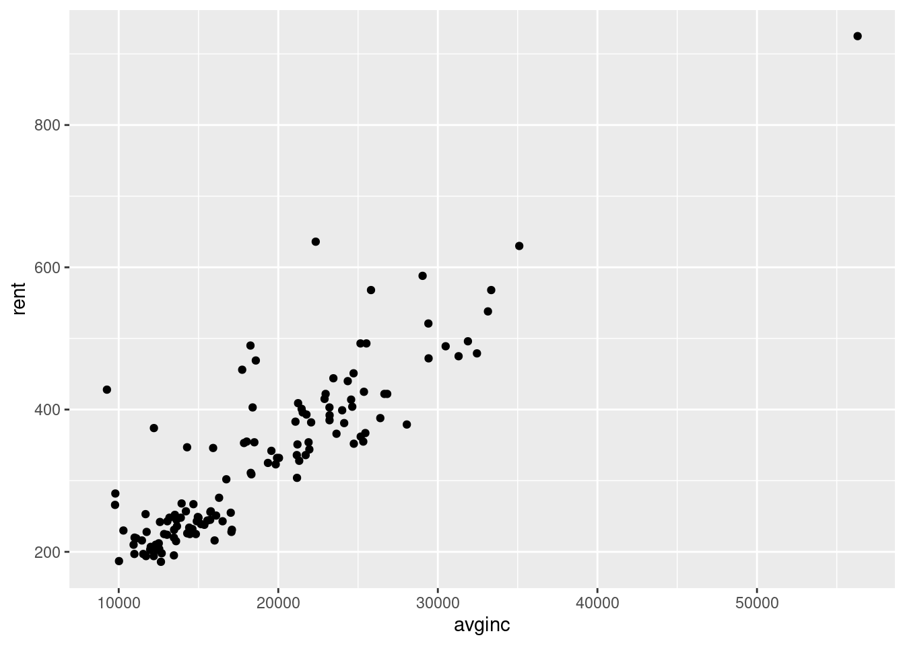
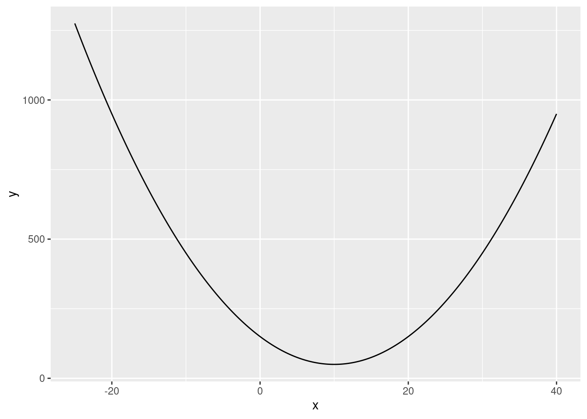
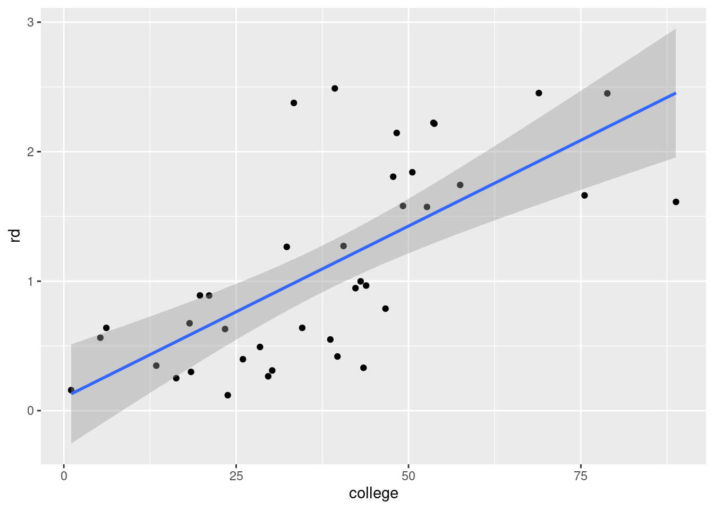

729^(1/3)[1] 9Calculate \(\sqrt[3]{729}\) using R.
729^(1/3)[1] 9Calculate \(\log_3\left(243\right)\) using R.
log(243, base = 3)[1] 5If we create the following vector in R, what class will it be?
c(1, 2, TRUE, FALSE)x <- c(1, 2, TRUE, FALSE)
x[1] 1 2 1 0class(x)[1] "numeric"# All elements of a vector in R must have the same class. Here all elements
# are coerced to be numeric.Write an R command to generate a numeric vector containing the following sequence:
\[ (0.00, 0.01, 0.02, 0.03, \dots, 0.97, 0.98, 0.99, 1.00, 0.00, 0.01, 0.02, 0.03, \dots, 0.97, 0.98, 0.99, 1.00) \] The resulting sequence should have 202 elements.
rep(seq(from = 0, to = 1, by = 0.01), times = 2) [1] 0.00 0.01 0.02 0.03 0.04 0.05 0.06 0.07 0.08 0.09 0.10 0.11 0.12 0.13 0.14
[16] 0.15 0.16 0.17 0.18 0.19 0.20 0.21 0.22 0.23 0.24 0.25 0.26 0.27 0.28 0.29
[31] 0.30 0.31 0.32 0.33 0.34 0.35 0.36 0.37 0.38 0.39 0.40 0.41 0.42 0.43 0.44
[46] 0.45 0.46 0.47 0.48 0.49 0.50 0.51 0.52 0.53 0.54 0.55 0.56 0.57 0.58 0.59
[61] 0.60 0.61 0.62 0.63 0.64 0.65 0.66 0.67 0.68 0.69 0.70 0.71 0.72 0.73 0.74
[76] 0.75 0.76 0.77 0.78 0.79 0.80 0.81 0.82 0.83 0.84 0.85 0.86 0.87 0.88 0.89
[91] 0.90 0.91 0.92 0.93 0.94 0.95 0.96 0.97 0.98 0.99 1.00 0.00 0.01 0.02 0.03
[106] 0.04 0.05 0.06 0.07 0.08 0.09 0.10 0.11 0.12 0.13 0.14 0.15 0.16 0.17 0.18
[121] 0.19 0.20 0.21 0.22 0.23 0.24 0.25 0.26 0.27 0.28 0.29 0.30 0.31 0.32 0.33
[136] 0.34 0.35 0.36 0.37 0.38 0.39 0.40 0.41 0.42 0.43 0.44 0.45 0.46 0.47 0.48
[151] 0.49 0.50 0.51 0.52 0.53 0.54 0.55 0.56 0.57 0.58 0.59 0.60 0.61 0.62 0.63
[166] 0.64 0.65 0.66 0.67 0.68 0.69 0.70 0.71 0.72 0.73 0.74 0.75 0.76 0.77 0.78
[181] 0.79 0.80 0.81 0.82 0.83 0.84 0.85 0.86 0.87 0.88 0.89 0.90 0.91 0.92 0.93
[196] 0.94 0.95 0.96 0.97 0.98 0.99 1.00The logical vectors a and b have equal length. Which of the following options is always the same as !a | !b, regardless of the contents of a and b?
a & b!(a | b)!(a & b)# Make two vectors covering every possibility:
a <- c(TRUE, TRUE, FALSE, FALSE)
b <- c(TRUE, FALSE, TRUE, FALSE)
# The target output is:
!a | !b[1] FALSE TRUE TRUE TRUE# Try the different options:
a & b[1] TRUE FALSE FALSE FALSE!(a | b)[1] FALSE FALSE FALSE TRUE!(a & b)[1] FALSE TRUE TRUE TRUE# The last one, !(a & b), matchesDownload the dataset rental.csv. The dataset contains information on the population, student enrollment, average rent and average income for 64 American cities in 1980 and 1990. The variable descriptions are:
city: A number identifying the city.year: The year.pop: Population of the city.enroll: Student enrollment in the city (total number of students).rent: Average rent in the city (in dollars).avginc: Average annaul income in the city (in dollars).How many observations are in the dataset?
df <- read.csv("rental.csv")
nrow(df)[1] 128Create a variable called studentratio which is the proportion of the city’s population made up by students in that year. What is the median of this variable?
df$studentratio <- df$enroll / df$pop
median(df$studentratio)[1] 0.2362887What was the average rent across cities in 1980?
mean(df[df$year == 1980, ]$rent)[1] 239.6562How many cities had an average rent exceeding $400 in 1990?
sum(df[df$year == 1990, ]$rent > 400)[1] 32Create a scatter plot with:
avginc on the horizontal axisrent on the vertical axis.Choose the answer below which best describes what we can see in the plot.
library(ggplot2)
ggplot(df, aes(avginc, rent)) + geom_point()
# Cities with higher average income usually have higher average rent.Download the dataset copper.csv. The dataset contains the closing price for the copper futures on the stock market (variable “Price”) each day throughout 2022, together with the opening, highest and lowest price in that day. Furthermore, it includes the volume traded and the percentage daily change in the closing price.
In this question you will need clean this dataset to answer the questions that follow.
You should do the following cleaning tasks:
Date variable to a date.Date ascending (the earliest date in the data should be first, the most recent date last).Price, Open, High and Low to numeric.Change to numeric. Tip: Use gsub("\\%", "", x) to remove a percentage symbol from x.DayOfWeek to day_of_week.If you did all the steps correctly, you should have 260 observations. The average of the high variable should be 4.047335. The average of the change variable should be -0.046. If only some of these match your cleaned dataset, you will still be able to answer some of the questions correctly.
# First perform all the cleaning tasks:
df <- read.csv("copper.csv")
# Format the date:
head(df$Date)[1] "31-12-2022" "30-12-2022" "29-12-2022" "28-12-2022" "27-12-2022"
[6] "26-12-2022"# Format is DD-MM-YYYYY (year with century):
df$Date <- as.Date(df$Date, format = "%d-%m-%Y")
# Order by date:
df <- df[order(df$Date), ]
# Drop observations with missing data:
df <- na.omit(df)
# Convert prices data to numeric:
df$Price <- as.numeric(df$Price)
df$Open <- as.numeric(df$Open)
df$High <- as.numeric(df$High)
df$Low <- as.numeric(df$Low)
# Convert Change numeric:
df$Change <- as.numeric(gsub("\\%", "", df$Change))
# Change the name of the DayOfWeek variable (1st variable in the dataset):
names(df)[1] <- "day_of_week"
# Convert variable names to lower case:
names(df) <- tolower(names(df))What is the median of the variable change in the cleaned data?
median(df$change)[1] -0.065On what day of the week was the maximum value of the variable high?
df[df$high == max(df$high), ]$day_of_week[1] "Mon"For Mondays in the cleaned data, what is the mean of the variable open? That is, calculate the mean of the variable open on Mondays only.
mean(df[df$day_of_week == "Mon", ]$open)[1] 4.009908Create a variable called increase from the variable change according to:
\[ increase= \begin{cases} 1 & \text{ if } change > 0 \\ 0 & \text{ otherwise} \\ \end{cases} \]
What is the sum of the variable increase in the cleaned data?
Hint: Use the ifelse() function.
df$increase <- ifelse(df$change > 0, 1, 0)
sum(df$increase)[1] 122The following 3 questions will involve working with the following mathematical function defined over all real numbers \(x\): \[f(x) = x^2 - 20x + 150\]
Plot the function between the \(x\) values \(-25\) and \(+40\). Choose the answer below which best describes the shape of this function:
Note: you do not need to store your answer to this question in your R script.
f <- function(x) {
y <- x^2 - 20 * x + 150
return(y)
}
library(ggplot2)
x <- seq(-25, 40, length.out = 2000)
y <- f(x)
df <- data.frame(x, y)
ggplot(df, aes(x, y)) + geom_line()
# We can see that it has a U shape.Use R to find the value of \(x\) at an extreme point of this function.
f_max <- optimize(f, c(-100, 100), maximum = FALSE)
f_max$minimum[1] 10What value does the function take at the extreme point?
f_max$objective[1] 50# or alternatively:
f(f_max$minimum)[1] 50Download the two datasets:
country, year and college. The variable college is the total number of people enrolled in third-level education in the country divided by the total population of people of college-going age (then multiplied by 100). Enrollment can exceed 100% if there are many older adults attending college.country, year and rd. The variable rd is the country’s spending on research and development (R&D) as a percentage of gross domestic product (GDP) in that year (ranging from 0 to 100).Using the dataset college-enrollment.csv, get the number of observations by country. How many countries have exactly 24 observations in the dataset? That is, how many countries have data for every year over the period 1996-2019?
Hint: One way to do this is to use the aggregate function to count the number of observations per country (with the function length in the FUN argument). Then find how many rows of this output has a value equal to 24.
df <- read.csv("college-enrollment.csv")
tmp <- aggregate(college ~ country, data = df, FUN = length)
sum(tmp$college == 24)[1] 33Using the dataset r-and-d.csv, perform the following steps:
If you performed this correctly, your dataset should have 60 rows where the first 3 rows are:
country 2000 2010
1 Argentina 0.43884 0.56104
2 Armenia 0.19106 0.24139
3 Australia 1.57320 2.37075Calculate the change in the R&D expenditure as a percentage of GDP from 2000 to 2010. That is, calculate the R&D expenditure as a % of GDP in 2010 minus the R&D expenditure as a % of GDP in 2000.
What is the average change across countries?
Tip: if your reshaped data is called wide, you can get the change from 2000 to 2010 with wide[, 3] - wide[, 2].
df <- read.csv("r-and-d.csv")
df <- df[df$year %in% c(2000, 2010), ]
library(reshape2)
df <- dcast(df, country ~ year)Using rd as value column: use value.var to override.df <- na.omit(df)
mean(df[, 3] - df[, 2])[1] 0.1845765Create a scatter plot with:
Choose the answer below which best describes what we see in the plot:
Tip: Merge the two datasets college-enrollment.csv and r-and-d.csv by the variables "country" and "year". Create a subset of this merged dataset containing only data from the year 1996. Then create the scatter plot using the 1996 data.
df1 <- read.csv("college-enrollment.csv")
df2 <- read.csv("r-and-d.csv")
df <- merge(df1, df2, by = c("country", "year"))
library(ggplot2)
ggplot(df[df$year == 1996, ], aes(college, rd)) +
geom_point() +
geom_smooth(method = "lm")`geom_smooth()` using formula = 'y ~ x'
# Countries with higher college enrollment usually spend more on R&D as a percentage of GDP.